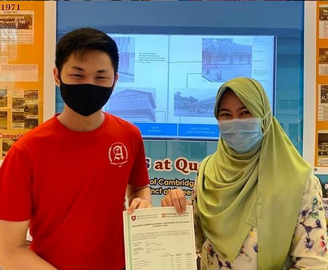

My name is Teck Yong Chua. Born in the United States in 2004, and growing up here in Singapore, I am now writing this blog to let you into my experience with Singapore Polytechnic thus far,
as well as to help you in deciding whether or not you want to enroll into my course, Diploma in Common Infocomm Technology Program(DCITP) in Singapore Polytechnic's School of Computing(SoC).
Interests
I enjoy watching anime. I've been watching anime since 2017. Some of my favourites include but are not limited to:
Steins: Gate, Darling in the Franxx, Highschool DxD, A Certain Scientific Railgun, Plastic Memories, and many more.
In addition to anime, I also enjoy playing card games like Cardfight Vanguard!!, as well as video games, such as Fate/Grand Order(F/GO), Genshin Imapct, Portal, and Resident Evil, just to name a handful.

Achievments
I have had a couple of achievements over the years, mostly in Secondary School. Some of my recent achievemnts include:
A silver medal in the Singapore Math Kangaroo Contest, A bronze in the Sinagpore and Asian Schools Math Olympiad, and top 5 in the school of O'levels.
Academic achievments aside, I also had a couple of achievements in the world of video games. For instance, I once held the position of being top 10 in Singapore
wiith the hero Khufra in a game called Mobile Legends, as well as recreating my secondary school in a game called minecraft
(More info can be found in the secondary school page)